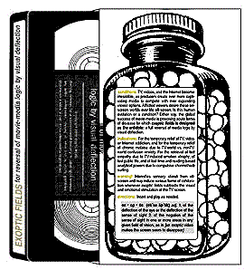

|
This "video to end all videos!" is the ultimate gift for your favorite couch potato. The back of the box says it all. In a single package, you get an ida-charged gift that's good for laughs and the most advanced consumer product ever designed to deliberately un-consume. Give this PERFECT GIFT for our media age as a source of joy-a means of attack. As a catalyst for understanding, . . . a wedge for separating, . . . Or a mortar for joining more complete unions.
|
 (contents) One hour of exoptic fields recorded on magnetic tape that playback as specific liquid surfaces, colors, luminance's, and forms, including a static brick wall, all arranged and set in motion precisely to deflect viewers' eyes from any surface upon which they appear. Includes an approx. one minute introduction and glimpse of movie-mediascape history which is preceeded by a radically improved FBI warning. |
|||
|
Never judge
a video by its cover. The back of the pill-bottle box gives "conditions" and "indications" for the couch potatoes you love. Stated boldly, see below. HELP ADVANCE MEDIA KNOWLEDGE! By getting this video into bookstores or other places for sale or for free as an OBJECT OF INTEREST. By proposing to reverse media's logic of attraction, media's essential function, this video creates a point of critical distance. One that's completely outside the flux and flow of the nearly all encompassing global media-sphere surging with endless supplies of both "good" and "bad" media. |
||||
|  |
conditions:
TV, videos, and the Internet become
|
|||
|
indications: For the temporary relief of TV, video, or Internet addiction; and for the temporary relief of chronic malaise due to TV-world vs. nonTV-world confusion anxiety. For the retrieval of lost empathy due to TV-induced emotion atrophy; of lost public life; and of lost time and reading-based analytical powers due to compulsive channel/web surfing. warning! Intensifies sensory stimuli from off-screen and may induce various forms exhilar-ation when exoptic fields subtracts TV-area visual and emotional stimulation of the TV screen. directions: Insert and play as needed. |
||||
| ex • op • tic (ek´se äp´tik) adj. 1. of the deflection of the eye or the deflection of the sense of sight 2. of the negation of the sense of sight in one or more areas in any given field of vision, as in [an exoptic video makes the screen seem to disappear] | ||||
|
active ingredient: One hour of exoptic fields recorded on magnetic tape that play back as specific liquid surfaces, colors, luminance's, and forms, including a static brick wall, all arranged and set in motion precisely to deflect viewers' eyes from any surface upon which they appear. inactive ingredient: Approx. one minute introduction and glimpse of movie-mediascape history. EXOPTIC FIELDS for the reversal of
movie-media logic by visual deflection
blind eye media
exoptic fields produced&designed by
willy mal |
||||
© blind eye media, llc